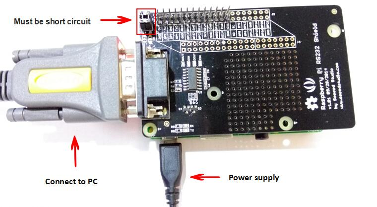
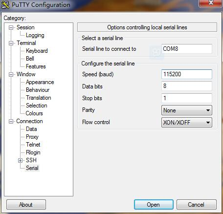
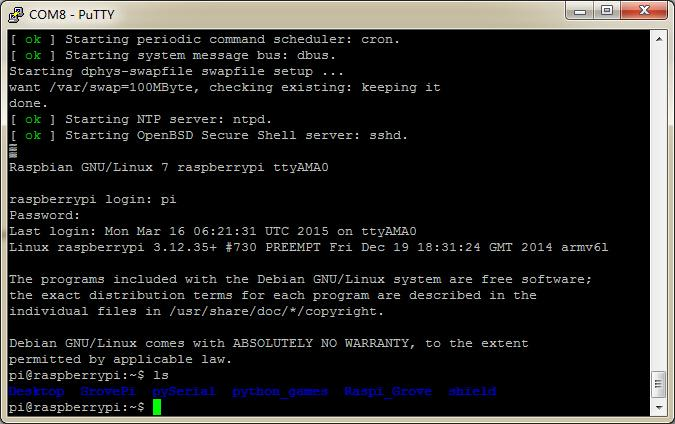

Raspberry Pi RS232 Board v1.0 is a standard communication port for industry equipment.This module is base on MAX3232,which is a dual driver/receiver that includes a capacitive voltage generator to supply TIA/EIA-232-F voltage levels from a single 5-V supply. The shield integrates DB9 connectors (female) that provide connection to various devices with RS232 interface. Also the RS232 headers will facilitate your connections and commissioning. It provides the welding areas to make full use of extra space on it, which is highly convenient for prototyping.
| Item | Min | Typical | Max | Unit |
|---|---|---|---|---|
| Input Voltage Range | -25 | / | 25 | V |
| Input Threshold Low(VCC=3.3V/5.0V) | 0.6 / 0.8 | 1.2 / 1.5 | / | V |
| Input Threshold High (VCC=3.3V/5.0V) | / | 1.5 / 1.8 | 2.4 / 2.4 | V |
| Maximum Data Rate | 120 | 235 | kHz | |
| Operating Temperature | 0 | / | 70 | ℃ |
| Dimension | 91.20 * 56.15*32 | mm | ||
UART Pin must be pup joint if you want to connect to raspberry pi.
Using serial COM ports to Configure system on Raspberry Pi.

COM must be set as what you fine on you PC's device management.Then power on your raspberry pi.you can see you serial port assistant as shown:


Raspberry_Pi_RS232_Board_v1.0_sch_pcb
MAX3232